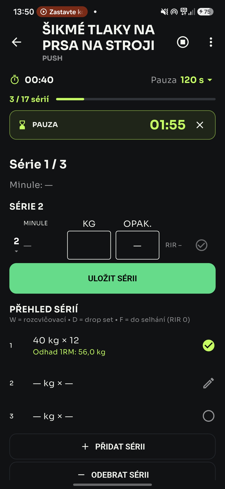
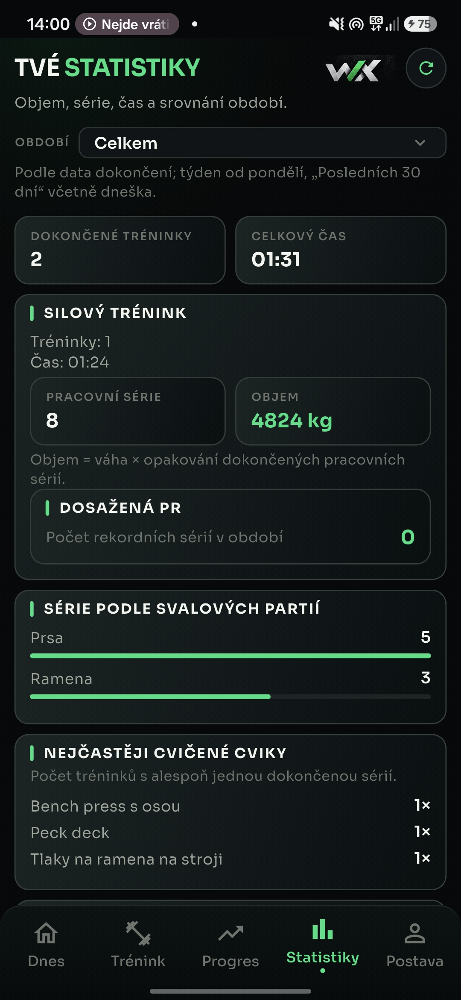
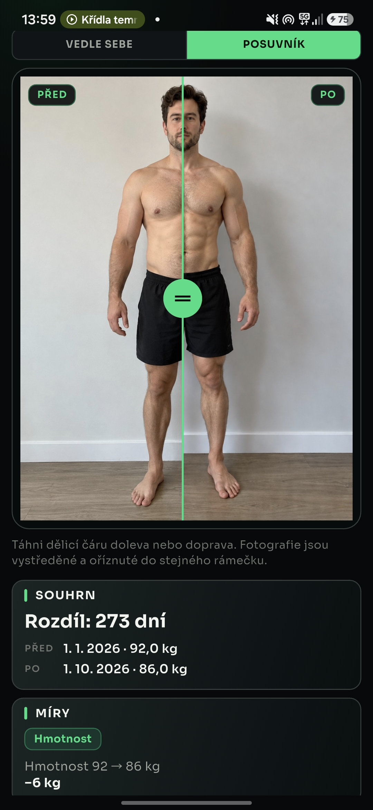

Trening siłowy
Serie, powtórzenia, ciężary, rekordy osobiste i plany treningowe.
SIŁA & TECHNIKATWÓJ TRENING. TWOJE POSTĘPY.
WOOTREX łączy trening siłowy, cardio, aktywności na świeżym powietrzu i śledzenie sylwetki w jednym miejscu.
ZAMKNIĘTE TESTY ANDROIDA • iOS W PRZYGOTOWANIU
YOUR NEXT VERSION
01 / FUNKCJE
Od pierwszej serii do ostatniego kilometra.
Wszystko, co prowadzi do twojej kolejnej wersji.
Serie, powtórzenia, ciężary, rekordy osobiste i plany treningowe.
SIŁA & TECHNIKAZapis GPS, dystans, czas, tempo i twoja trasa.
KAŻDY KILOMETRAktywności cardio i wyniki. Śledź swoją wytrzymałość.
WYTRZYMAŁOŚĆPorównuj okresy, objętość treningową i swój rozwój.
SZERSZA PERSPEKTYWAMasa ciała, wymiary i długoterminowe postępy w szerszym ujęciu.
TWÓJ ROZWÓJWizualne postępy i porównanie sylwetki na przestrzeni czasu.
WIDOCZNA ZMIANAWOOTREX W AKCJI
Przesuń w bok, aby zobaczyć ekrany →



02 / POSTĘPY
Każdy trening to element układanki. WOOTREX pomaga zobaczyć całość.
Ilustracja obszarów postępu · nie jest ekranem aplikacji ani rzeczywistymi danymi
03 / DOŁĄCZ
WOOTREX jest obecnie w zamkniętych testach na Androidzie. Wersja iOS przez TestFlight jest w przygotowaniu.
Zamknięte testy
TestFlight w przygotowaniu
Android może poprosić o zgodę na instalowanie aplikacji z tego źródła, ponieważ wersja beta jest udostępniana poza Google Play.
Napisz do nas. Razem rozwiniemy WOOTREX.
04 / KONTAKT
Opinia, pomysł lub zainteresowanie betą?